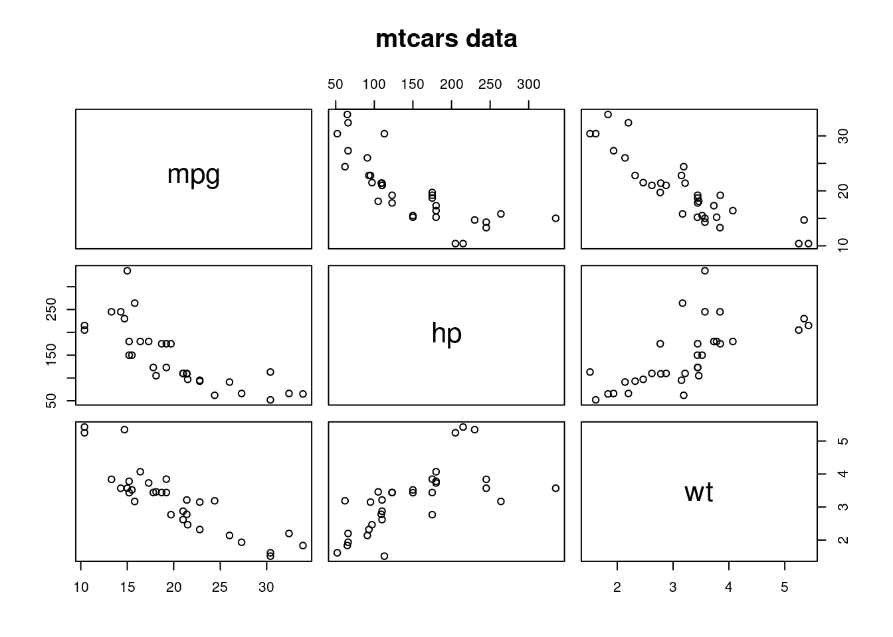
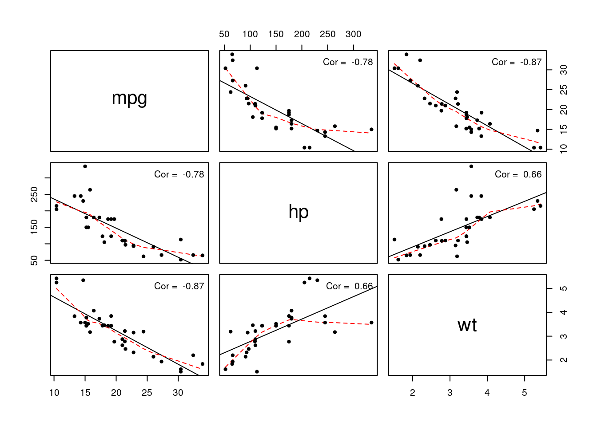

2.2 Exploratory data analysis
An image is worth a thousand words and in statistics, visualization is crucial. Scatterplots are produced using the function plot. You can control the graphic console options using par — see ?plot and ?par for a description of the basic and advanced options available.
Once plot has been called, you can add additional observations as points (lines) to the graph using point (lines) in place of plot. If you want to add a line (horizontal, vertical, or with known intercept and slope), use the function abline.
Other functions worth mentioning at this stage:
boxplotcreates a box-and-whiskers plothistcreates an histogram, either on frequency or probability scale (optionfreq = FALSE).breakscontrol the number of bins.rugadds lines below the graph indicating the value of the observations.pairscreates a matrix of scatterplots, akin toplotfor data frame objects.
Let us focus for now on three variables: the gasoline consumption mpg, the weight of the car wt and the horsepower hp.
The pairs plot and the Pearson correlation indicate strong positive (negative) association between variables.
The function coplot draws conditional plots and is useful to check breaks (if the relationship for different levels of a variable changed).
## mpg hp wt
## mpg 1.0000000 -0.7761684 -0.8676594
## hp -0.7761684 1.0000000 0.6587479
## wt -0.8676594 0.6587479 1.0000000
The functionalities of pairs is not limited to the above. One could add the line of best fit, a local smoother and even print the correlation coefficient on the graph. The function below (unnecessarily complicated at this stage) just illustrates some of the possibilities. Beware to overinterpret the graphs (the causal relationships implied need not make sense).
pairs(mtcars[, c("mpg", "hp", "wt")], panel = function(x, y){
abline(lm(y ~ x))
lines(lowess(x, y), lty = 2, col = 2)
points(x, y, pch = 20)
legend(x = "topright", legend = paste("Cor = ", round(cor(x, y), 2)), bty = "n")
})